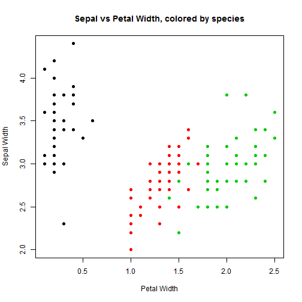

Simple classification of Iris Species
I created a small app that will classify the species of iris based on Sepal and Petal Length. It is based on the irises datasets in R. It takes in a petal width and a sepal width and returns the likely species.
The app itself is done using the R library Shiny, which can create interactive applications. I used a slider to change the sepal and petal width.
Loading dataset
For some preliminary analysis, we load the dataset and look at the first five lines. This will give us an idea of what the data looks like.
library(datasets)
head(iris, 5)
## Sepal.Length Sepal.Width Petal.Length Petal.Width Species
## 1 5.1 3.5 1.4 0.2 setosa
## 2 4.9 3.0 1.4 0.2 setosa
## 3 4.7 3.2 1.3 0.2 setosa
## 4 4.6 3.1 1.5 0.2 setosa
## 5 5.0 3.6 1.4 0.2 setosa
Plot of data
plot(Sepal.Width ~ Petal.Width, data = iris, col = Species, xlab = "Petal Width",
ylab = "Sepal Width", main = "Sepal vs Petal Width, colored by species", pch=19)

Algorithm
Through a decision tree, I found some predictors for species. Hence my algorithm became the following:
categorize <- function(pet, sep) {
if (pet < .8) {
return("Setosa")
}
if (pet < 1.35 | (pet < 1.75 & sep > 2.65)){
return("Versicolor")
}
else {
return("Virginica")
}
}
This misclassifies 3 points, which is respectable.
Discussion and Examples
Although this is not necessarily a perfect algorithm - for example, what if the petal width is between .6 and 1 - it gives a fairly good understanding of what will happen. Just to show that the algorithm works as expected, here are a few examples
categorize(.5, 5)
## [1] "Setosa"
categorize(1.2, 1)
## [1] "Versicolor"
categorize(2.5, 3)
## [1] "Virginica"